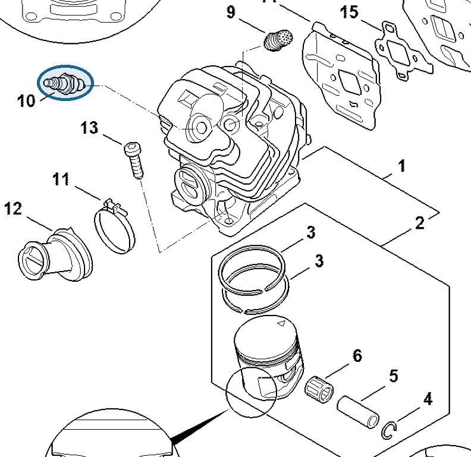
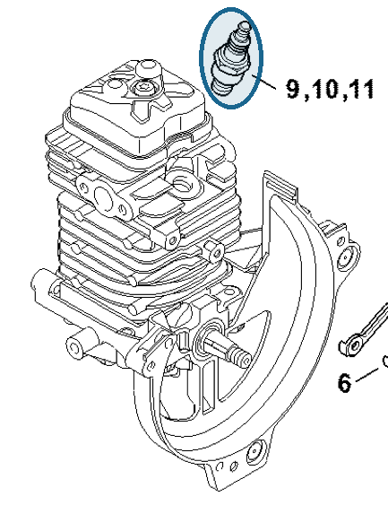

Spark plug NGK CMR6H
0000 400 7011
MS 462 — cylinder
Spark plug in the cylinder. Also listed in section D and the ignition-system section.
Item 10 Qty listed: 1

MS 462 C-M Z spare-parts list, 10/29/2024. Drawing p. 9; parts table p. 10.
HT 135 — cylinder
Spark plug in the cylinder.
Item 9 Qty listed: 1

HT 135-Z spare-parts list, 10/28/2024. Drawing p. 8; parts table p. 9.